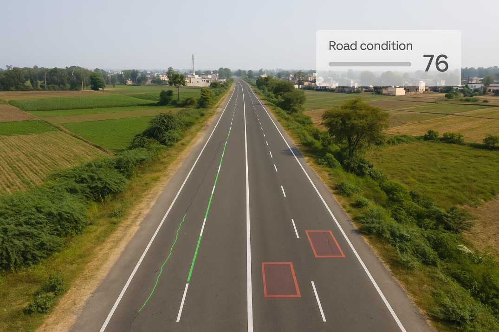

Streamline infrastructure maintenance with our Field Service Management (FSM) system. This project is designed
to monitor and maintain constructed roads and related equipment such as traffic signals, surveillance cameras,
dividers, signboards, and more throughout the contracted period.
The system supports three key user roles. Field agents conduct regular patrols to inspect infrastructure and
report any issues directly through the application. The operations audit team reviews and verifies the submitted
reports, ensuring accuracy before approving maintenance actions. Finally, managers gain complete visibility into
operational expenses, tracking how resources are allocated and utilized.
Built with modern web technologies and a robust backend, this solution enhances efficiency, accountability, and
decision-making in infrastructure management, ensuring safer and well-maintained public assets.